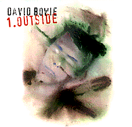

|  |
Produced by David Bowie & Brian Eno
Co-Produced & Engineered by David Richards Assistant Engineers: Ben Fenner, Andy Grassi, Jon Goldberger, Domonik Tarqua Musicians: David Bowie - Vocals, Saxophone, Guitar & Keyboards Brian Eno - Synthesisers, Treatments & Strategies Reeves Gabrels - Guitar Erdal Kizilcay - Bass & Keyboards Mike Garson - Grand Piano Sterling Campbell - Drums Carlos Alomar - Rhythm Guitar Joey Barron - Drums Yossi Fine - Bass Tom Frish - Additional Guitar on "Strangers When we Meet" Kevin Armstrong - Additional Guitar on "Thru' These Architects Eyes". Bryony, Lola, Josey & Ruby Edwards - Backing Vocals on "The Hearts Filthy Lesson" and "I Am With Name" Album Design: Denovo. Album Cover Concept: David Bowie & Denovo. Photography by John Scarisbrick. Stylist: Jennifer Elster. Recorded at Mountain Studios, Switzerland. Mixed and Additional Treatments by David Richards. Assisted by David Bowie. Mastered by David Richards and Kevin Metcalfe at. The Town House Digital Mastering Studios, London. C & P 1995 David Bowie under exclusive license to Virgin Records US and BMG International for Rest of World |